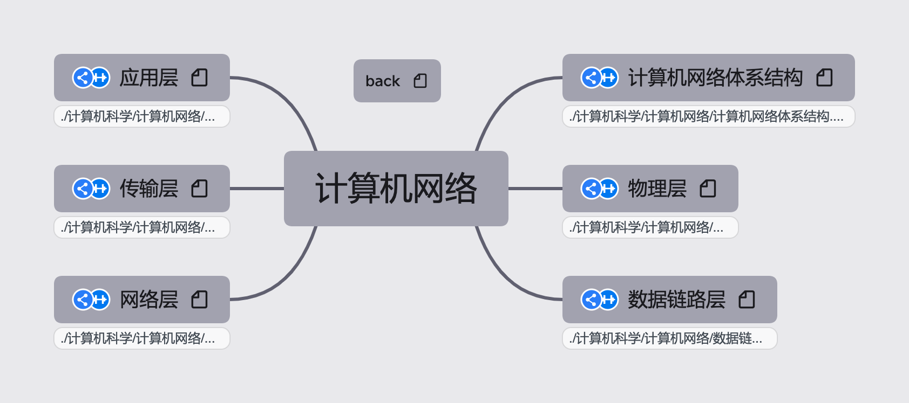

2022.11.06

图例说明
加粗：章标题
斜体：题型/主要内容
目录
总论与周边
计算机网络体系结构
物理层
数据链路层
网络层
传输层
应用层
计算机网络按照408考研辅导进行梳理。
链接: https://pan.baidu.com/s/1M34LB98BsKdHGby2eMC_Qw?1cv1
提取码: 1cv1 如果资源失效请联系我
微信公众号（程序员cxuan）的计算机网络笔记总结
2023王道计算机网络资料 : 2023王道配套视频与习题解答
标注*的暂未收录
2022王道计算机网络资料 : 2022王道配套视频与习题解答
计算机网络（第7版）谢希仁：考研标准教材
计算机网络(自顶向下): 国际经典教材
TCP/IP详解：国际经典著作
卷1:原理 卷2:实现 卷3:扩展
计算机网络其他书籍
CSAM协议族
1191044A_scan.pdf
计算机网络实验课程与工具
nse教程
Cisco Packet Tracer - 需要注册账户（免费）
计算机网络实验（计算机网络 思科Cisco Packet Tracer仿真实验-哔哩哔哩）：https://b23.tv/WbUfNDR
计算机网络实验教程 计算机网络实验教程 by （美）Emad Aboelela.pdf
Wireshark网络分析就这么简单.pdf
| 简称 | 会议全称 | 出版社 |
|---|---|---|
| MOBICOM | ACM International Conference on Mobile Computing and Networking | ACM |
| SIGCOMM | ACM International Conference on the applications, technologies, architectures, and protocols for computer communication | ACM |
| INFOCOM | IEEE International Conference on Computer Communications | IEEE |
V1 2021.08.24
按照《2022年计算机网络考研复习指导》与相关课程进行整理，完成全部知识框架搭建
V2 2021.11.23
按照2022年408考纲，《2022年计算机网络考研复习指导》与相关课程进行整理，进行习题归纳与知识整合
V3 2022.3.17
按照《2023年计算机网络考研复习指导》和《计算机网络（第7版）》-谢希仁，进一步完善，增加了文档式专题笔记
V4 2022.08.17
添加了每个专题的核心内容概要，添加了《计算机网络微课堂》(Up: 湖科大教书匠)部分内容，修改了文档式专题笔记的很多错误